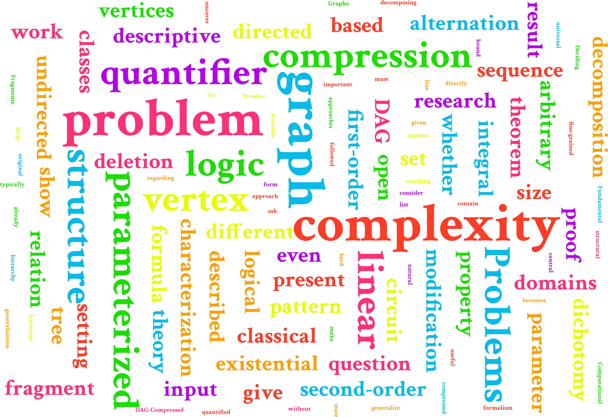

Hey! 👋🏻
I'm Florian and I am currently a doctoral student in theoretical computer science at the Institute of Theoretical Computer Science of the University of Lübeck, where I have the fortune of having Professor Till Tantau as an advisor. Before that, I received my BSc and MSc in computer science from Leibniz University Hannover.
I'm mainly interested in the interplay of logic and computation, which can be viewed from a variety of angles in theoretical computer science: from descriptive complexity over proof theory to type theory. My main focus of study at the moment is the expressive power of various logic fragments in the setting of parameterized complexity.
As for theoretical computer science, I am also interested in quantum computing, theorem proving, type theory, and programming languages. Besides my research interests in theoretical computer science, I am interested in mathematics, physics, and music.
You can download my CV here.
Interests 🔬
- Finite Model Theory
- Parameterized Complexity Theory
- (Non-classical) Logic
Career stops 🎓
Doctoral Student in Theoretical Computer Science
University of Lübeck
2021 – present
MSc in Computer Science
University of Hannover
2018 – 2021
Exchange Semester in Logic and Computation
TU Vienna
2020/2021
BSc in Computer Science
University of Hannover
2015 – 2018
Publications 📖
On the Descriptive Complexity of Vertex Deletion Problems
International Symposium on Mathematical Foundations of Computer Science (MFCS), 2024
ConferenceArXivCite
@inproceedings{BannachCT24,
author = {Max Bannach and
Florian Chudigiewitsch and
Till Tantau},
editor = {Rastislav Kr{\'{a}}lovic and
Anton{\'{\i}}n Kucera},
title = {On the Descriptive Complexity of Vertex Deletion Problems},
booktitle = {49th International Symposium on Mathematical Foundations of Computer
Science, {MFCS} 2024, August 26--30, 2024, Bratislava, Slovakia},
series = {LIPIcs},
volume = {306},
pages = {17:1--17:14},
publisher = {Schloss Dagstuhl -- Leibniz-Zentrum f{\"{u}}r Informatik},
year = {2024},
doi = {10.4230/LIPICS.MFCS.2024.17}
}
PACE Solver Description: UzL Exact Solver for One-Sided Crossing Minimization
International Symposium on Parameterized and Exact Computation (IPEC), 2024
ConferenceCite
@inproceedings{BannachCKW24,
author = {Max Bannach and
Florian Chudigiewitsch and
Kim{-}Manuel Klein and
Marcel Wien{\"{o}}bst},
editor = {{\'{E}}douard Bonnet and
Pawel Rzazewski},
title = {{PACE} Solver Description: UzL Exact Solver for One-Sided Crossing
Minimization},
booktitle = {19th International Symposium on Parameterized and Exact Computation,
{IPEC} 2024, September 4--6, 2024, Royal Holloway, University of London,
Egham, United Kingdom},
series = {LIPIcs},
volume = {321},
pages = {28:1--28:4},
publisher = {Schloss Dagstuhl -- Leibniz-Zentrum f{\"{u}}r Informatik},
year = {2024},
doi = {10.4230/LIPICS.IPEC.2024.28}
}
Logical Characterization of Algebraic Circuit Classes over Integral Domains
Mathematical Structures in Computer Science (MSCS), 2024
Journal ArXivCite
@article{BarlagCG2024,
title={Logical characterizations of algebraic circuit classes over integral domains},
DOI={10.1017/S0960129524000136},
journal={Mathematical Structures in Computer Science},
author={Barlag, Timon and Chudigiewitsch, Florian and Gaube, Sabrina A.},
year={2024},
pages={1--29}
}
Existential Second-Order Logic over Graphs: Parameterized Complexity
International Symposium on Parameterized and Exact Computation (IPEC), 2023
Conference ArXivCite
@inproceedings{BannachCT23,
author = {Max Bannach and
Florian Chudigiewitsch and
Till Tantau},
editor = {Neeldhara Misra and
Magnus Wahlstr{\"{o}}m},
title = {Existential Second-Order Logic over Graphs: Parameterized Complexity},
booktitle = {18th International Symposium on Parameterized and Exact Computation,
{IPEC} 2023, September 6--8, 2023, Amsterdam, The Netherlands},
series = {LIPIcs},
volume = {285},
pages = {3:1--3:15},
publisher = {Schloss Dagstuhl -- Leibniz-Zentrum f{\"{u}}r Informatik},
year = {2023},
doi = {10.4230/LIPICS.IPEC.2023.3}
}
Recent Trends in Graph Decomposition (Dagstuhl Seminar 23331)
Dagstuhl Reports 13(8): 1-45 (2023)
Report ArXivCite
@article{Karypis0SABCCCC23,
author = {George Karypis and
Christian Schulz and
Darren Strash and
Deepak Ajwani and
Rob H. Bisseling and
Katrin Casel and
{\"{U}}mit V. {\c{C}}ataly{\"{u}}rek and
C{\'{e}}dric Chevalier and
Florian Chudigiewitsch and
Marcelo Fonseca Faraj and
Michael R. Fellows and
Lars Gottesb{\"{u}}ren and
Tobias Heuer and
Kamer Kaya and
Jakub Lacki and
Johannes Langguth and
Xiaoye Sherry Li and
Ruben Mayer and
Johannes Meintrup and
Yosuke Mizutani and
Fran{\c{c}}ois Pellegrini and
Fabrizio Petrini and
Frances A. Rosamond and
Ilya Safro and
Sebastian Schlag and
Roohani Sharma and
Blair D. Sullivan and
Bora U{\c{c}}ar and
Albert{-}Jan Yzelman},
title = {Recent Trends in Graph Decomposition (Dagstuhl Seminar 23331)},
journal = {Dagstuhl Reports},
volume = {13},
number = {8},
pages = {1--45},
year = {2023},
doi = {10.4230/DAGREP.13.8.1}
}
Computational Complexity of Deciding Provability in Linear Logic and its Fragments
Master Thesis
ArXivCite
@article{abs-2110-00562,
author = {Florian Chudigiewitsch},
title = {Computational Complexity of Deciding Provability in Linear Logic and
its Fragments},
journal = {CoRR},
volume = {abs/2110.00562},
year = {2021},
url = {https://arxiv.org/abs/2110.00562},
eprinttype = {arXiv},
eprint = {2110.00562}
}
